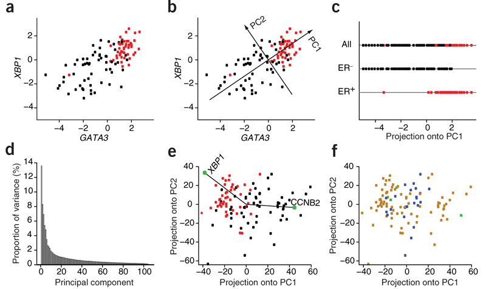
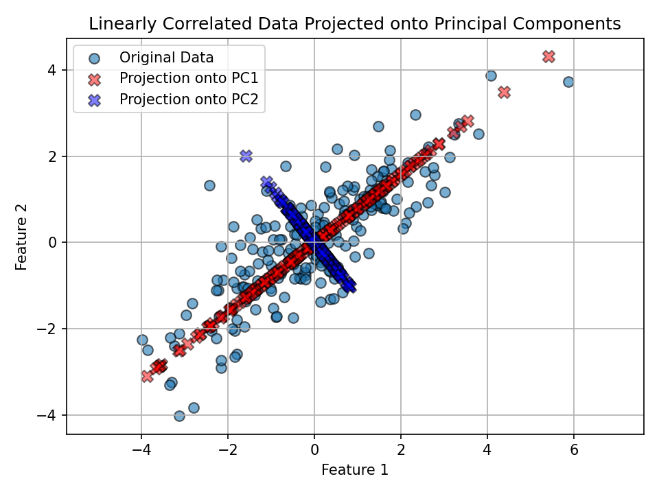
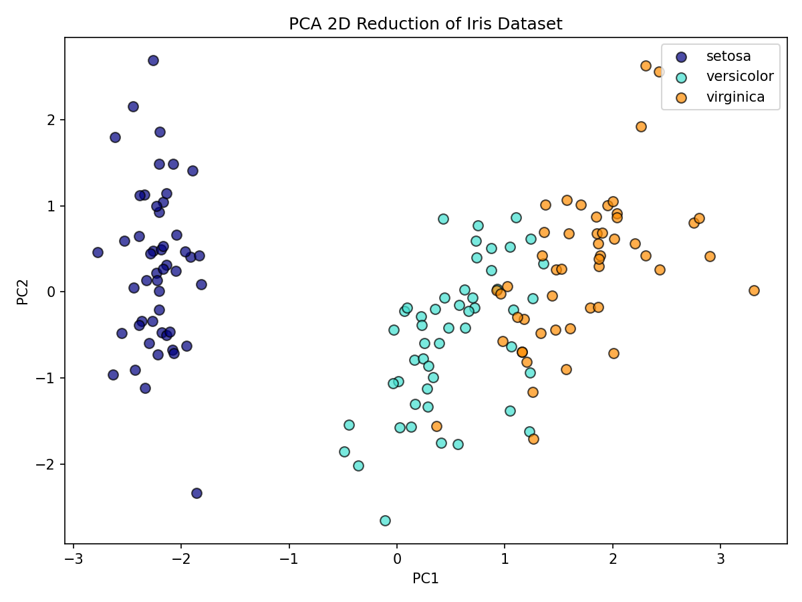
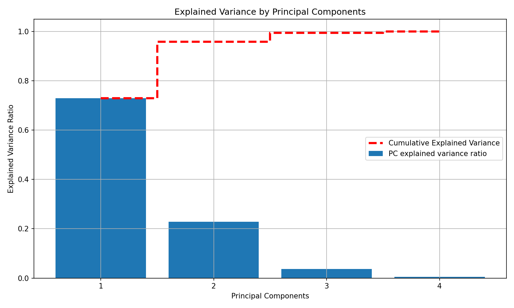

Applications of Principal Component Analysis (PCA)

Estimated reading time: ~30 minutes
Applications of Principal Component Analysis (PCA)
Objectives
- Use PCA to project 2-D data onto its principal axes
- Use PCA for feature space dimensionality reduction
- Relate explained variance to feature importance and noise reduction
Introduction
This article explores two practical applications of PCA:
- Projecting 2-D data onto its principal axes, the orthogonal directions that capture the most variance.
- Reducing higher-dimensional data to a lower-dimensional feature space to simplify modeling, reduce noise, and visualize key structure.
Along the way, you’ll visualize projections, interpret principal components, and examine explained variance.
Part I: Projecting 2-D data onto its principal axes
We’ll generate a 2D dataset with correlated features and use PCA to find the main directions of variance.
Setup
Code chunks are provided for reference but won’t execute during rendering.
# Imports
import numpy as np
import matplotlib.pyplot as plt
from sklearn.decomposition import PCA
from sklearn import datasets
from sklearn.preprocessing import StandardScalerVisualize feature relationship
The figure above shows correlated features with an elongated spread.
Fit PCA and inspect components
pca = PCA(n_components=2)
X_pca = pca.fit_transform(X)
components = pca.components_
explained = pca.explained_variance_ratio_
components, explainedKey intuition:
- PC1 aligns with the direction of greatest variance.
- PC2 is orthogonal to PC1 and explains the remaining variance.
Project data onto principal axes and plot
We project each point onto the component directions and overlay those projections in the original feature space.
# Projections (coordinates along PC directions)
projection_pc1 = np.dot(X, components[0])
projection_pc2 = np.dot(X, components[1])
# Back to original feature-space directions for visualization
x_pc1 = projection_pc1 * components[0][0]
y_pc1 = projection_pc1 * components[0][1]
x_pc2 = projection_pc2 * components[1][0]
y_pc2 = projection_pc2 * components[1][1]
plt.figure()
plt.scatter(X[:, 0], X[:, 1], label='Original Data', ec='k', s=50, alpha=0.6)
plt.scatter(x_pc1, y_pc1, c='r', ec='k', marker='X', s=70, alpha=0.5, label='Projection onto PC1')
plt.scatter(x_pc2, y_pc2, c='b', ec='k', marker='X', s=70, alpha=0.5, label='Projection onto PC2')
plt.title('Linearly Correlated Data Projected onto Principal Components')
plt.xlabel('Feature 1')
plt.ylabel('Feature 2')
plt.legend()
plt.grid(True)
plt.axis('equal')
plt.show()
Observation: - PC1 (red) follows the direction of widest spread in the data. - PC2 (blue) is perpendicular to PC1 and explains the remaining (smaller) variance.
Part II: PCA for dimensionality reduction (Iris dataset)
We’ll reduce the four-dimensional Iris dataset to two principal components for visualization and insight.
Load and standardize data
We analyze the Iris dataset, standardize features, and apply PCA to 2 components; visuals are pre-rendered below.
# Load the Iris dataset
iris = datasets.load_iris()
X_iris = iris.data
y = iris.target
target_names = iris.target_names
# Standardize features before PCA
scaler = StandardScaler()
X_scaled = scaler.fit_transform(X_iris)Reduce to 2 principal components
Results are shown in the scatter plot.
pca2 = PCA(n_components=2)
X_pca2 = pca2.fit_transform(X_scaled)Visualize in 2D PC space

How much variance do PC1 and PC2 explain together?
Together, PC1 and PC2 explain most of the variance, allowing effective 2D visualization.
100 * pca2.explained_variance_ratio_.sum()Interpretation: - The first two PCs typically capture most of the signal, enabling effective 2D visualization while preserving class structure.
A deeper look at explained variance
Let’s compute explained variance ratios for all four components and visualize both per-component and cumulative variance.

# Refit PCA without specifying n_components
scaler = StandardScaler()
X_scaled_full = scaler.fit_transform(X_iris)
pca_full = PCA()
X_pca_full = pca_full.fit_transform(X_scaled_full)
explained_variance_ratio = pca_full.explained_variance_ratio_
# Plot explained variance per component and cumulative
plt.figure(figsize=(10, 6))
plt.bar(x=range(1, len(explained_variance_ratio) + 1), height=explained_variance_ratio,
alpha=1, align='center', label='PC explained variance ratio')
plt.ylabel('Explained Variance Ratio')
plt.xlabel('Principal Components')
plt.title('Explained Variance by Principal Components')
cumulative_variance = np.cumsum(explained_variance_ratio)
plt.step(range(1, 5), cumulative_variance, where='mid', linestyle='--', lw=3,
color='red', label='Cumulative Explained Variance')
plt.xticks(range(1, 5))
plt.legend()
plt.grid(True)
plt.show()Notes: - The dashed red line shows how quickly variance accumulates as you add components. - In practice, you can pick the smallest number of PCs that preserves a target proportion of variance (e.g., 90–95%) to reduce noise and complexity.
Conclusion
- PCA identifies orthogonal directions of maximum variance (principal components).
- Projections onto these components reveal dominant structure and can simplify downstream models.
- On the Iris dataset, two components provide a compact, informative 2D representation and often retain most of the signal.